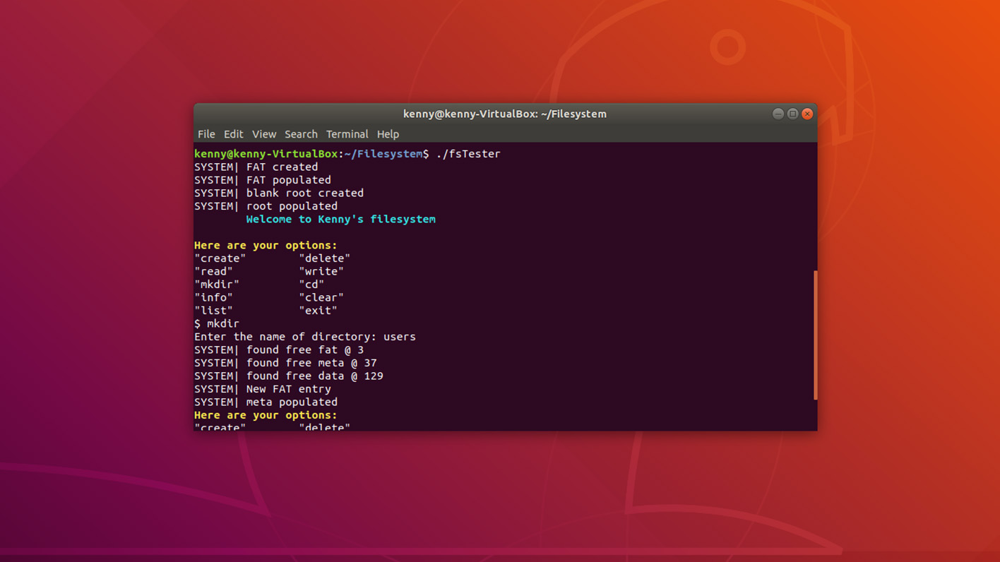
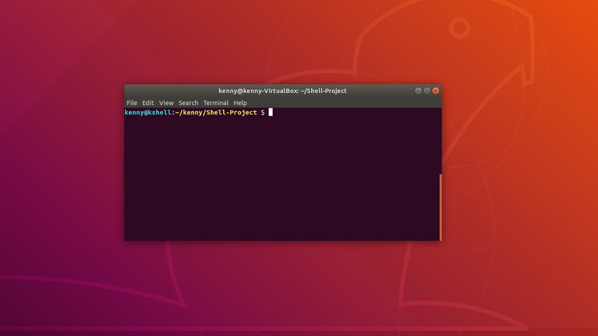
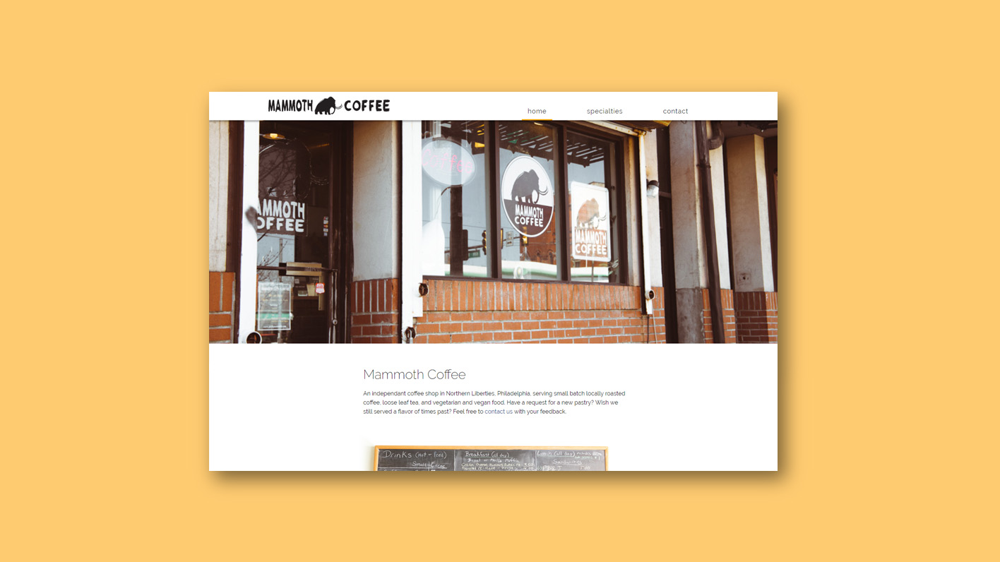

File System
Is a scaleable FAT file system that operates on an empty drive. Supports a directory structure as well as the ability to add, delete, and write files. View project here.
C

Invisible I
Team project to create a web tool for viewing metadata associated with images. View project here.
HTML, CSS, SQL, PHP, JS, jQuery
Linux Shell
built a functional shell in C. Allows for advanced features such as pipes, forks, file reading and writing. View project here.
C

Mammoth Coffee
Mammoth Coffee is a design re-work for a local philly coffee shop. The project can be viewed here.
HTML, CSS
